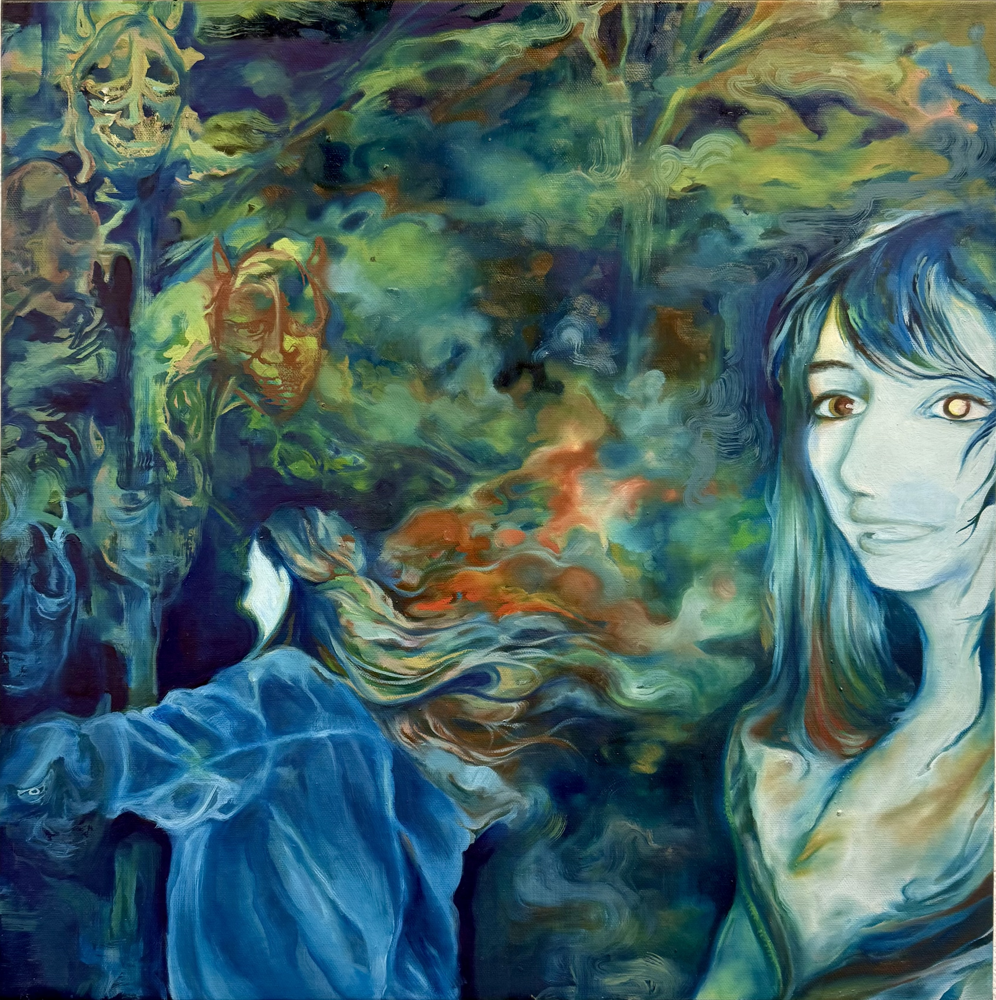

2025–Present

My Reflection is an Archive of Borrowed Evidence, 2026, Oil on canvas, 30 × 30 in

Untitled, 2025, Mixed media on Stonehenge paper, 30 × 50 in

A Record of April, 2026, Oil on canvas, 36 × 36 in

Cultures of Place, 2026, Mixed media on Bristol paper, 18 × 24 in

Where We Begin, What We Inherit, 2026, Oil on canvas, 28 × 24 in

Margot & Satya, 2026, Oil on canvas, 20 × 20 in

A Womb of Borrowed Bodies, 2026, Intaglio prints on assorted papers, 9 × 12 in each, Series of 4